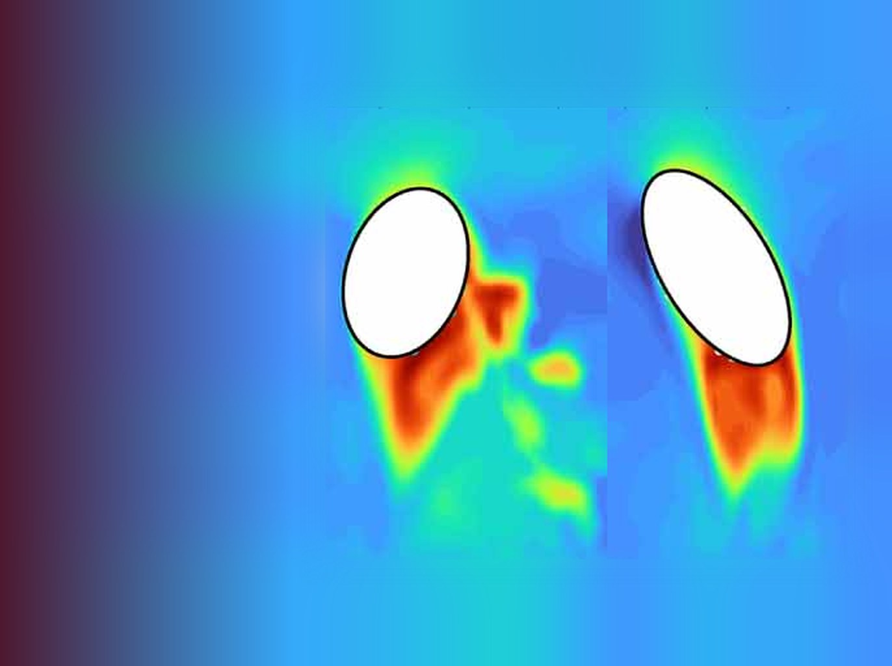
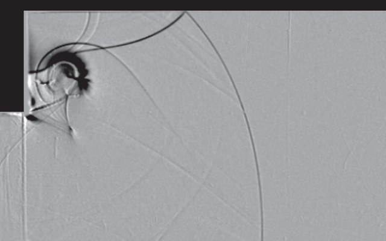
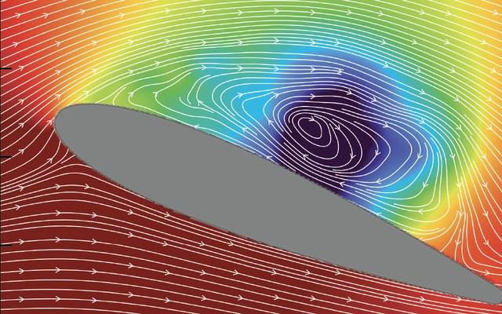
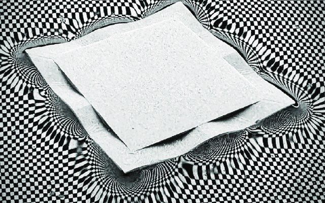
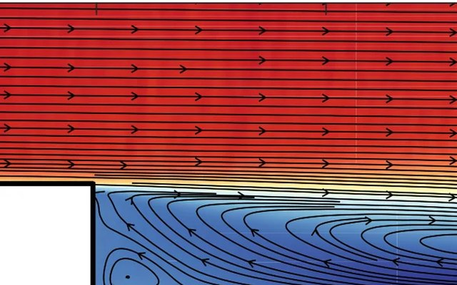
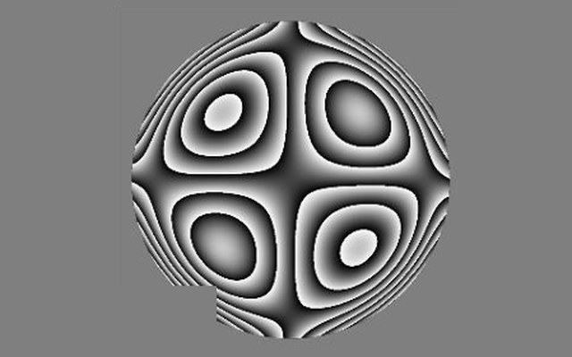
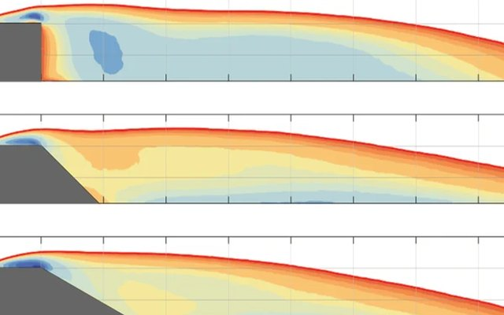
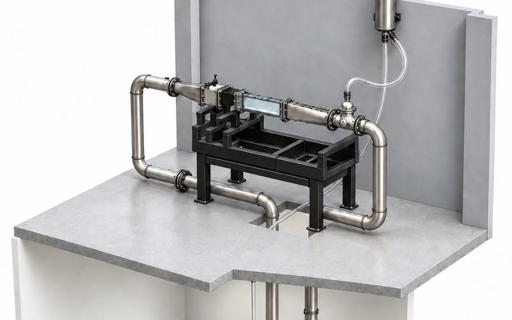
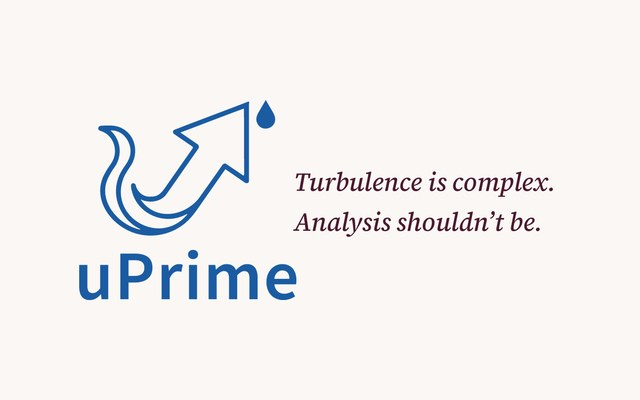

Featured research
Boundary-aware reconstruction
Velocity fields around moving solids from volumetric particle tracks.
Read this study →
Experimental Fluid Mechanics │ Flow Diagnostics │ Multiphase & Compressible Flows
I am a postdoctoral researcher at the Technion. I build experiments and develop measurement tools to understand vortices, wakes, shock waves, moving bodies, and complex flows.











